신홍균 선생
신홍균 선생(1881.8.20 ~ 1948.10.20)은 한의사이자 독립운동가이며, 신준식 박사의 숙조부입니다. 만주 일대에서 항일활동을 했으며 한국독립군 대진단 단장이자 군의관으로 활동했습니다.
- 1920년독립운동가 김중건과 함께 독립군 대진단 창설
- 1933년지청천 장군이 이끄는 독립군에 합류. 사도하자·동경성·대전자령 전투 등에 참전
- ~1941년한중반일회 및 동북항일연군과 연계해 항일 투쟁 지속
- 2020년건국훈장 애족장 추서
대전자령 전투와 목이버섯 이야기
일본군을 기다리던 독립군은 예상치 못한 폭우로 산속에서 3일 동안 추위와 배고픔을 견뎌야 했습니다. 군의관 신홍균 선생은 한의학 지식으로 주변의 목이버섯을 식량으로 활용했습니다. 병사들이 기운을 되찾고 전투를 이어갈 수 있도록 도운 이야기입니다.
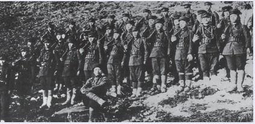
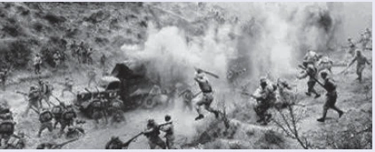
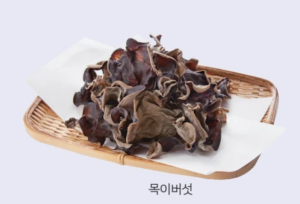
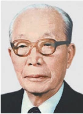
청파 신광렬 선생
신광렬 선생(1903. 2. 13 ~ 1980. 11. 11)은 의사·한의사·독립운동가이며 신준식 박사의 선친입니다. 독립운동의 기록과 의료 철학을 후대에 남겼습니다.
- 1924년만주 독립군 산하 제일 정몽 학교 교사 재직
- 1930년3·1운동 11주년 기념 만세운동 주도, 서대문형무소 수감
- 1932년만주에서 광생의원을 개원해 독립운동가 지원·치료
- 1946년해방 후 신익희 선생과 구국활동
- 1959년청파험방요결 집필
- 2022년대통령표창 서훈
자생의 뿌리가 된 두 기록
월남유서
독립운동 일대기와 가문의 발자취, 의료인으로서의 철학을 담았습니다. 긍휼지심을 바탕으로 한의학을 과학적으로 발전시켜 가업을 이어가기를 바란다는 뜻을 전합니다.
청파험방요결
7대에 걸친 한의서이자 신광렬 선생이 평생 손수 작성한 임상기록입니다. 한방 치료 연구와 임상 결과를 기록했으며, 자생 비수술 치료법의 근간이 되는 내용을 담고 있습니다.
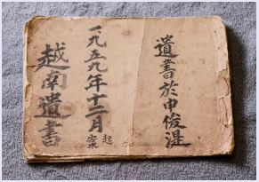
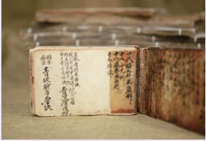
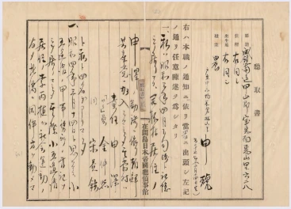
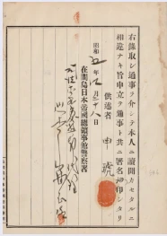
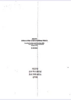
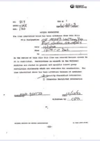
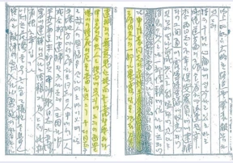